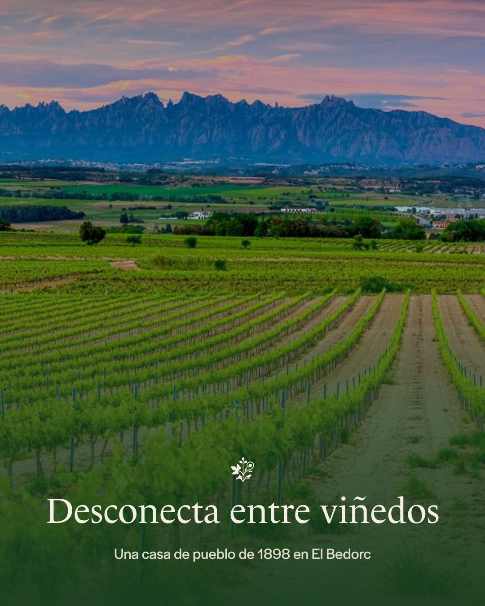
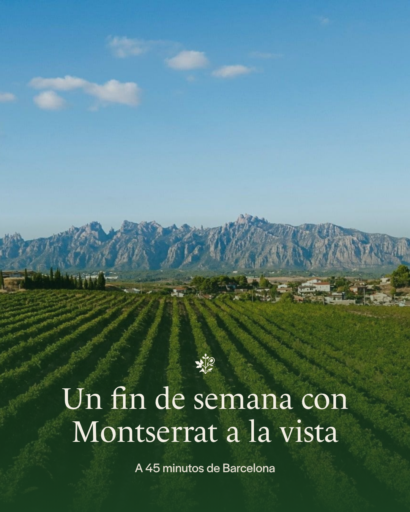
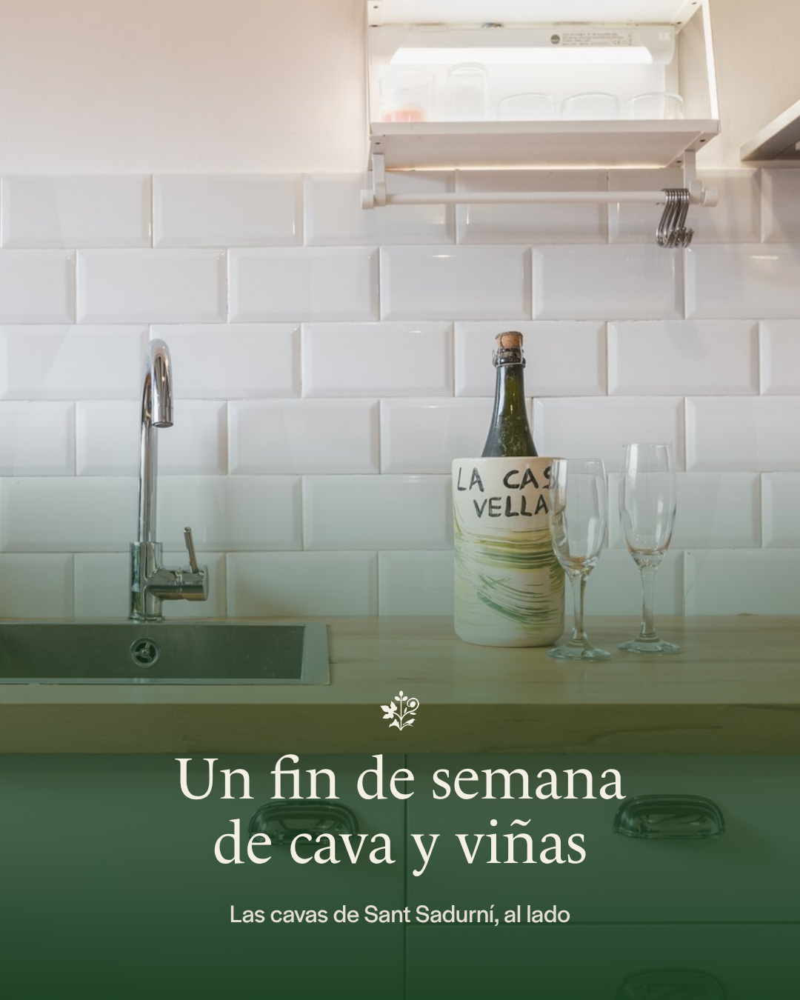
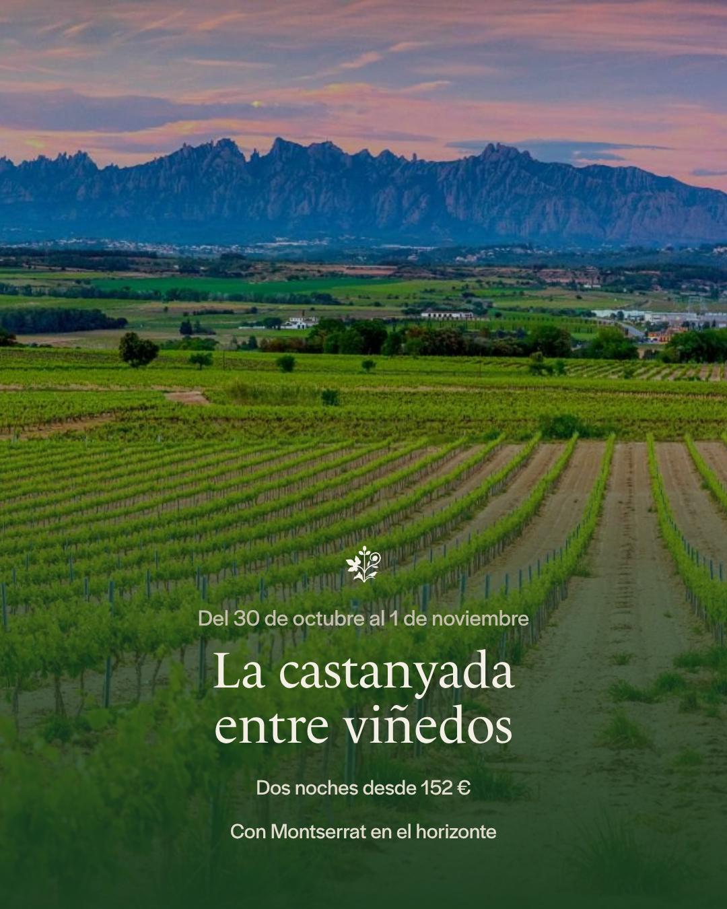
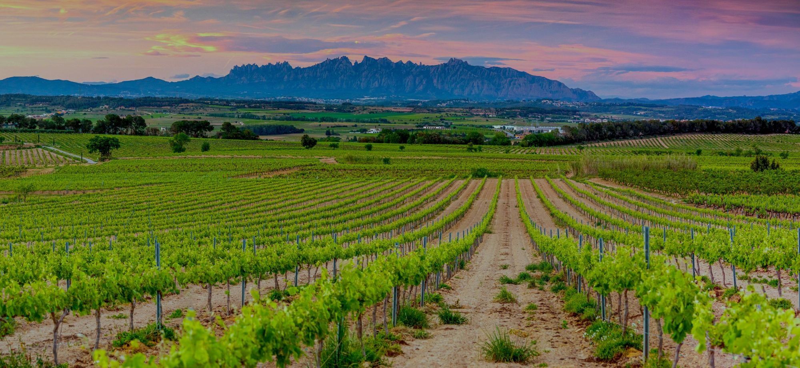

Anuncios, SEO y asistentes de IA
Qué está hecho, qué está en marcha y qué falta
29 de octubre de 2026
Qué está hecho, qué está en marcha y qué falta
29 de octubre de 2026
Google para quien ya busca. Instagram y Facebook para quien aún no nos conoce.
La web en tres idiomas y la ficha con 23 reseñas de 5,0.
Recomiendan lo que leen en la web, en los mapas y en lo que otros publican.
| Campaña | Gastado | Impresiones | Clics | Reservas iniciadas |
|---|---|---|---|---|
| General | 7,14 € | 1.582 | 72 | 3 |
| Castanyada | 14,33 € | 846 | 28 | 0 |
La general ya lleva tres personas a la reserva, a 2,38 € cada una. La castanyada acaba el 31.
Meta Ads, 29 de octubre de 2026




En castellano, catalán e inglés, en feed, story y carrusel
10 € al día, puja máxima de 0,50 €, castellano y catalán, cada uno con sus palabras.
GA4, la conversión «Reserva» con el importe de Stripe, el píxel de Meta y PostHog.

Una página por idioma: antes los rastreadores de IA solo veían el catalán
Datos estructurados, robots.txt, sitemap y llms.txt con los datos de Maite
Las reseñas de Google en la web, y un correo que las pide después de cada estancia
Un fin de semana en el Penedès
Las cavas de Sant Sadurní
Montserrat desde El Bedorc
Qué ver en El Bedorc
La temporada de calçots
Y una agenda de lo que pasa cerca
| Portadas en Google, en tres idiomas | Indexadas |
| Rastreadores de IA en Cloudflare | Permitidos |
| Aviso a Bing en cada cambio | Activo |
| Sitemap con las 21 páginas | Por reenviar |
Bing
Su rastreador y Bing
Dan una lista corta. Entra quien tiene ficha completa, reseñas, datos claros y menciones en las listas que citan.

«Escapada romántica cerca de Barcelona», «dónde dormir cerca de Sant Sadurní»…
Primera medición: no salimos en ninguna. La causa era el rastreo, ya resuelto.
Mientras tanto mandan los directorios: Escapada Rural, Clubrural, Femturisme. No estamos en ninguno.
Agenda y guías, comprobación de la web, las 15 preguntas, un cambio, borradores para Google y el informe.
La web responde, aviso a Bing, foros nuevos, menciones y eventos urgentes.
| Número de registro turístico | Lo piden casi todos los directorios |
| Ficha de Google | Fotos y una publicación por semana |
| Fichas en directorios | Textos listos para pegar |
| Seis respuestas | Mascotas, desayuno, accesibilidad, cuna |
Fin de la castanyada
Campaña general
Primera medición en los asistentes
Oferta del puente

casavellarural.com